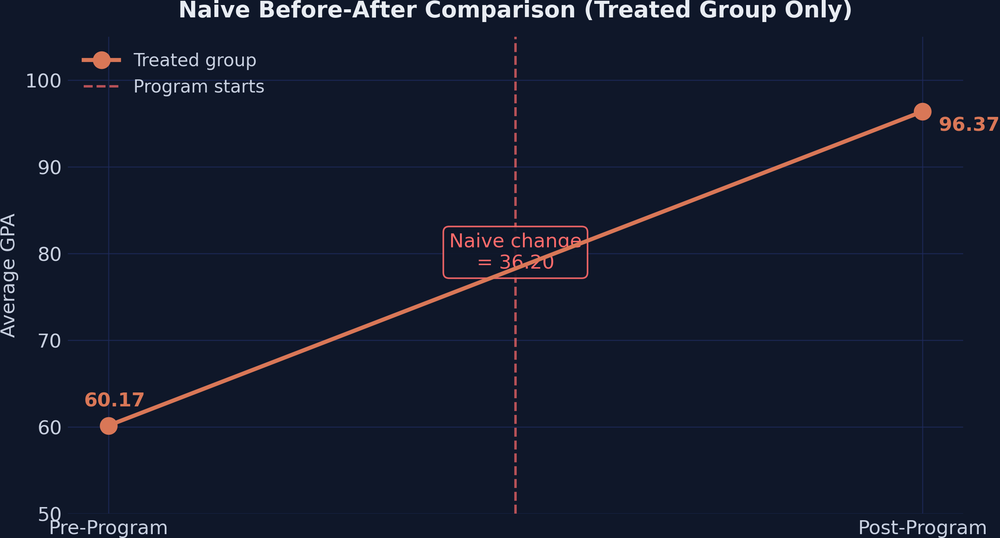
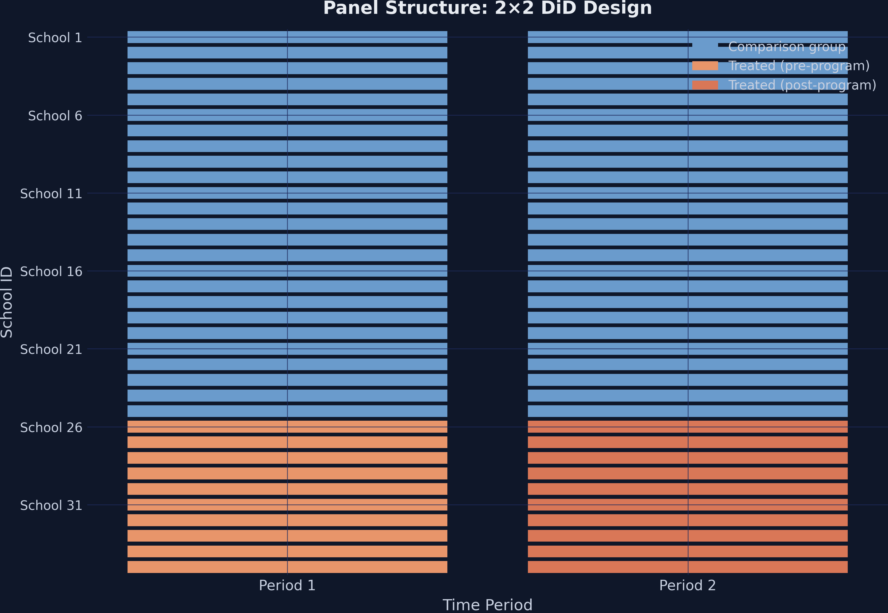
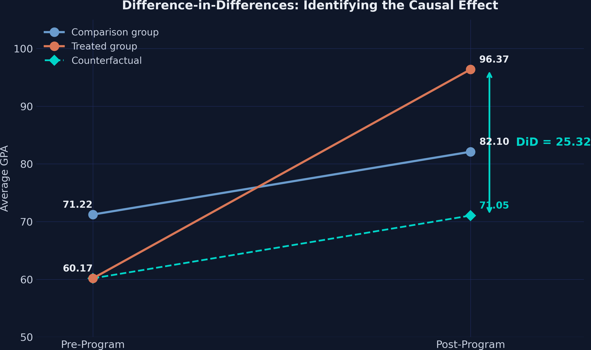
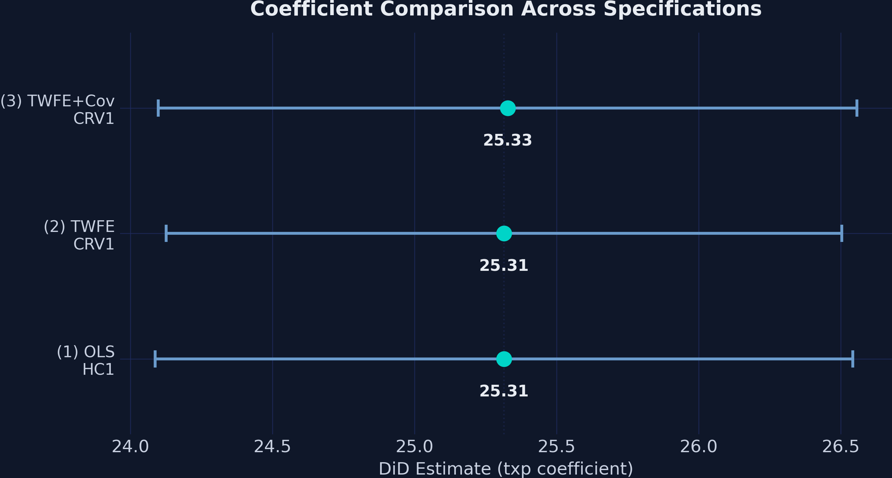
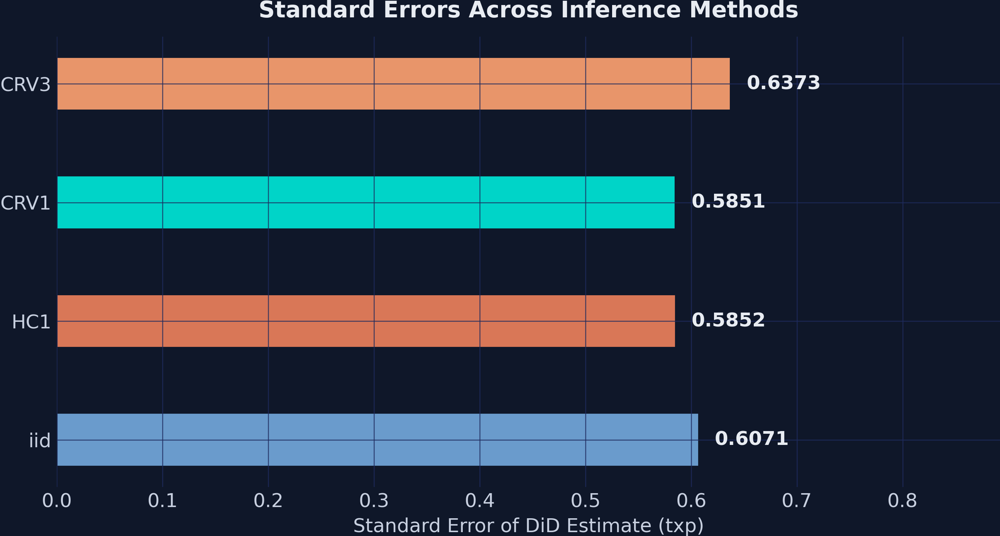
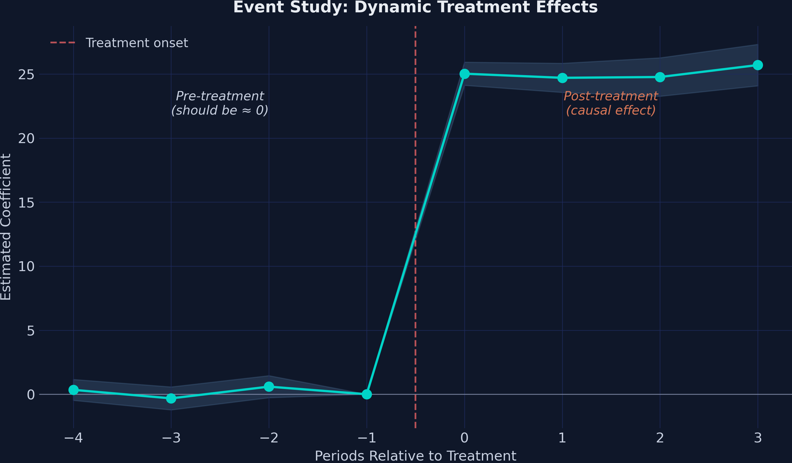
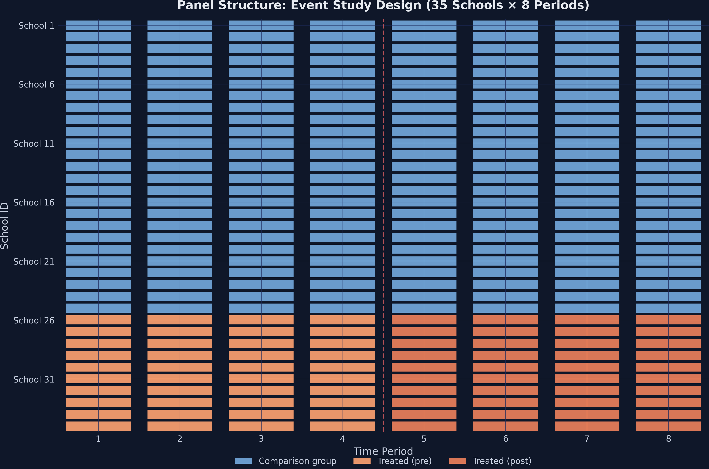

Does after-school tutoring raise GPA? Separating the program from the trend
Nagoya University (GSID)
July 8, 2026
Act I
A district launched after-school tutoring in 10 of its 35 high schools. One year later, average GPA in those schools rose from 60.17 to 96.37.
A 36.20-point leap. But the 25 untreated schools also improved — from 71.22 to 82.10. How much of the jump is really the program?

Treated-group GPA rising from 60.17 to 96.37 — the naive estimator credits the full 36.20-point increase to tutoring, ignoring everything else that changed.
Act II

Panel structure — 10 treated schools (orange) switch on after the intervention; 25 comparison schools (steel blue) never do. No school changes status, and timing is simultaneous.
| Group | Pre | Post | Change |
|---|---|---|---|
| Comparison (25) | 71.22 | 82.10 | +10.88 |
| Treated (10) | 60.17 | 96.37 | +36.20 |
The comparison group’s +10.88 is the secular trend — the rise that would have happened anyway.
\[DiD = \Big(\bar{Y}^{post}_{treat} - \bar{Y}^{pre}_{treat}\Big) - \Big(\bar{Y}^{post}_{ctrl} - \bar{Y}^{pre}_{ctrl}\Big)\]
\[DiD = (96.37 - 60.17) - (82.10 - 71.22) = 36.20 - 10.88 = 25.32\]
Subtract the trend the control group reveals; what’s left is the program’s causal effect.

Three lines — comparison (steel, 71.22→82.10), treated (orange, 60.17→96.37), and the counterfactual (teal dashed, 60.17→71.05). The 25.32 gap between the actual and counterfactual treated outcome is the ATT.
\[E[Y_{i,1}(0) - Y_{i,0}(0) \mid D=1] = E[Y_{i,1}(0) - Y_{i,0}(0) \mid D=0]\]
The change in untreated potential outcomes is the same for both groups — so the control’s trend stands in for the treated group’s missing counterfactual.
The estimand is the ATT: the average effect for the schools that actually got the program.
| Coefficient | Estimate | Maps to |
|---|---|---|
| Intercept | 71.22 | comparison pre-mean |
| treated | −11.05 | baseline level gap |
| post | +10.89 | common time trend |
| txp | 25.32 | the DiD estimate |
\[Y_{it} = \beta\,(\text{Treat}_i \times \text{Post}_t) + \gamma_i + \vartheta_t + \varepsilon_{it}\]
\(\gamma_i\) wipes school stains, \(\vartheta_t\) wipes period glare. PyFixest’s | pipe absorbs both — no dummy bookkeeping.

The txp estimate across OLS/HC1, TWFE/CRV1, and TWFE+covariate/CRV1 — all clustered tightly around 25.32 with narrow CIs nowhere near zero.

Standard errors across iid, HC1, CRV1, and CRV3. CRV3 is largest (0.637); HC1 and CRV1 are nearly identical (0.585). All four yield overwhelmingly significant results.
Act III
25.32
ATT, stable across specifications (25.315–25.328) · the naive 36.20 overstated it by 43%

Event-study coefficients by period relative to treatment. Leads (t = −4 to −2) sit near zero with CIs covering zero; lags (t = 0 to 3) jump to ≈25 and stay flat.
| Period | Estimate | 95% CI | Significant? |
|---|---|---|---|
| t = −4 | 0.34 | [−0.47, 1.16] | no |
| t = −3 | −0.32 | [−1.22, 0.57] | no |
| t = −2 | 0.59 | [−0.27, 1.45] | no |
| t = 0 | 25.03 | [24.12, 25.93] | yes |
| t = 3 | 25.70 | [24.08, 27.32] | yes |
Three near-zero leads validate parallel trends; four large lags trace a stable effect.

Panel structure for the event study — 35 schools across 8 periods. Treatment begins at period 5; 10 treated schools switch from light to dark orange, 25 comparison schools stay steel blue.
Objection. The estimate is precise and the pre-trends are flat — surely DiD has proven tutoring caused the gain.
Response. Precision is not identification. The 25.32 ATT is valid only under parallel trends and SUTVA. Flat pre-trends are supportive, not proof; and this is simulated data with parallel trends built in. In the field, expect imperfect pre-trends, smaller effects, and R² well below 0.99.